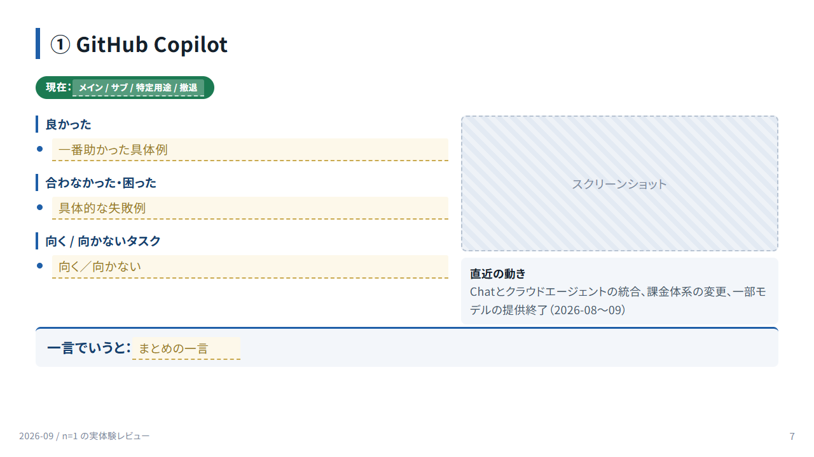
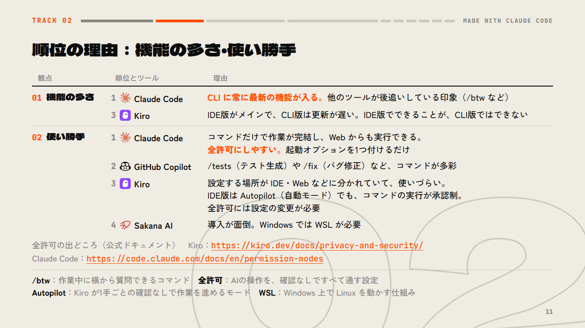
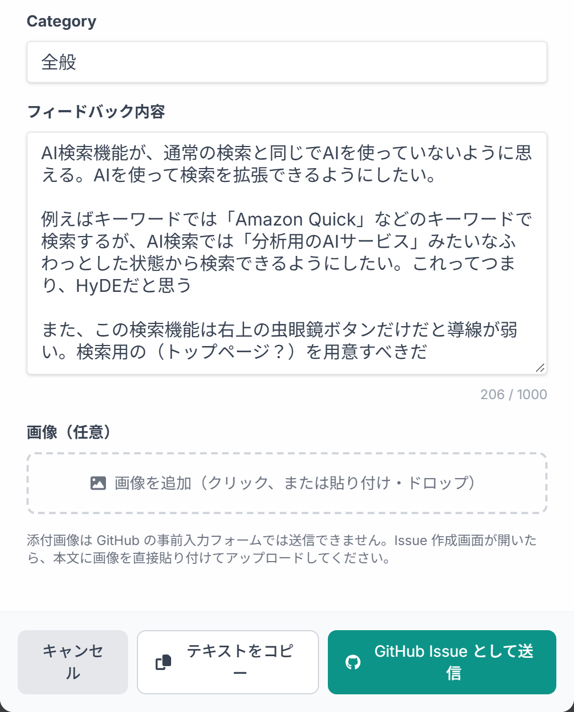
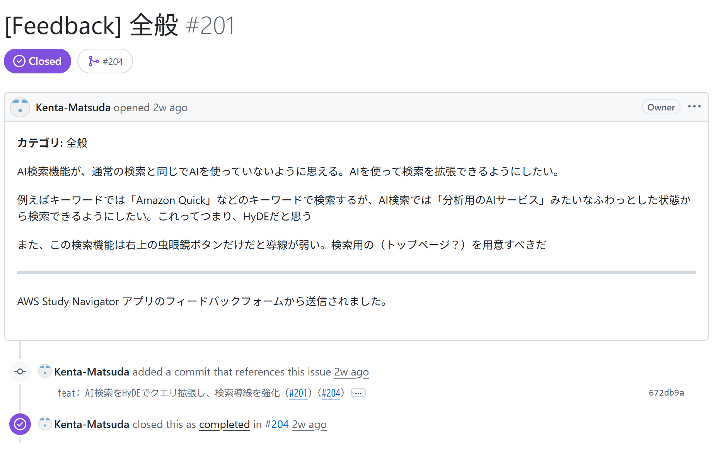
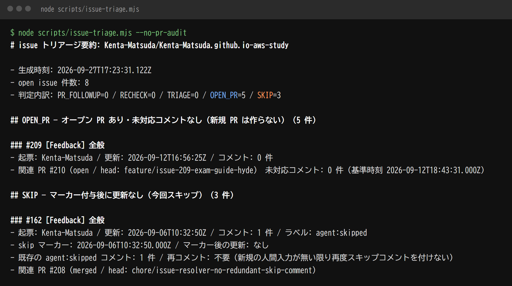
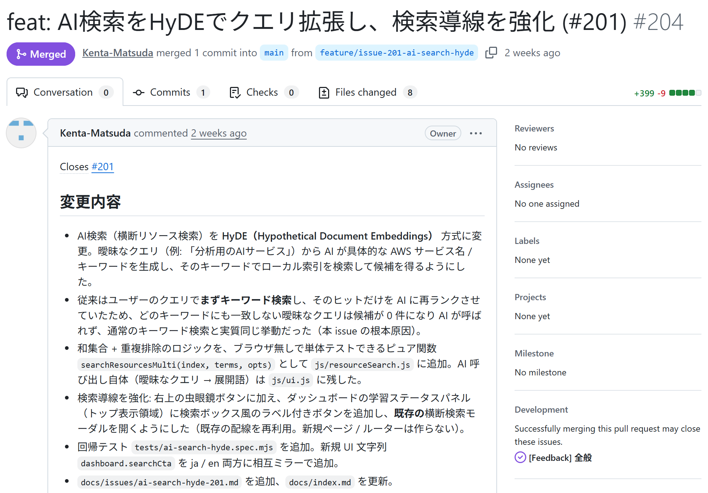
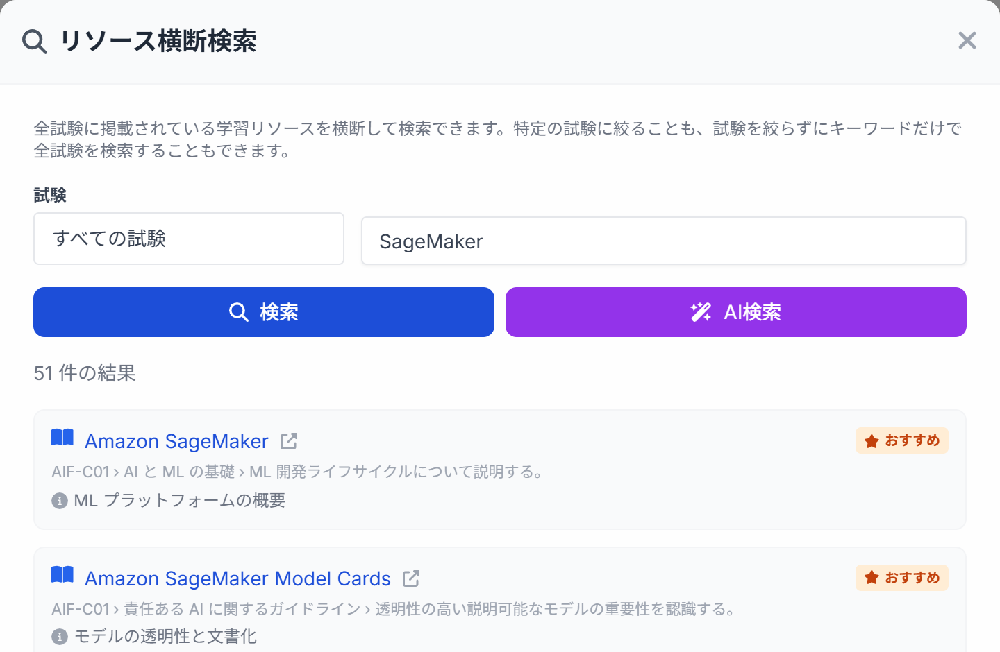

Previous slide Next slide Toggle fullscreen Toggle overview view Open presenter view
REC
最近AI で10 選.
@kenken38 MADE WITH CLAUDE CODE
Tracklist
01 発表資料づくり、AIに丸投げできる？
02 AIコーディングツール、どれを使ってる？
03 人がいなくても開発は回るのか？
04 AIは自分で進化できるのか？
05 AIに未解決問題を解かせてみた
06 声で話しかけると声で返ってくる
07 量子コンピュータの仕組みを機械学習に取り入れてみた
08 同じバグを2つのAIに直させたら？
09 名前を知らないものは検索できない？
10 AIへの長い指示、毎回キーボードで打つ？
01
Marp × Claude Code
発表資料づくりAIに丸投げできる？
01
この資料そのものがAIの作品です
V1 
AIツール比較の資料を作って
AIがやった 構成・文章・デザイン・図・画面撮影・数値計測・見た目の修正
人がやった ネタと事実を渡す・ダメ出しする（上の一言のような指示）
仕上げには具体的な指示 も出した：「この見出しだけ2行になっている。1行に収まるように言い換えて」
01
スライド作成に「Marp」というツールを利用
土台は普通の Markdown。そこにスライド用の書き方 が少し足されている。
書いたもの（slides.md の抜粋）
--- ①
theme: talk2026
---
⋮
--- ②
<!-- _class: t2 dense why --> ③
## 順位の理由：機能の多さ・使い勝手
| 観点 | 順位とツール | 理由 |
|---|---|---|
| 機能の多さ | 1 Claude Code | … |
<!-- 【ノート】全部は読まない --> ④
→
できたスライド（TRACK 02 の実物）

① 全体の設定 先頭の --- で囲んでテーマなどを書く
② ページの区切り 普通の Markdown では横線
③ ページの設定 _ を付けるとそのページだけに効く
④ 発表者ノート 設定ではないコメントがノートになる
書き方の公式ドキュメント：https://marpit.marp.app/markdown 設定の一覧：https://marpit.marp.app/directives
01
Marp は Node.js とブラウザでスライドに変換する
Markdown テーマ（CSS） Marp CLI Node.js で動くコマンド Marp Core HTML と CSS に変換 ブラウザ 画面を出さずに描画 PDF PPTX PowerPoint PNG・JPEG 画像 HTML ブラウザで発表 HTML はブラウザを通さず、そのまま書き出す
Node.js 製で無料 オープンソース。変換は1コマンド：marp slides.md --pdf
中身は3層 Marpit（変換の骨組み）に、Marp Core（標準テーマや数式）と Marp CLI（コマンド）が重なる
PPTX の中身は画像 ブラウザが描いたページを画像にして貼る。PowerPoint 上では文字を直せない
Node.js ：JavaScript をPC上で動かす実行環境 ブラウザ ：Chrome・Edge・Firefox のどれか。PDF・PPTX・画像を作るときに必要
01
Marp はAIと相性がいい
Marp はAIとは関係のない変換ツール 。ただ、その性質がAIコーディングツールの得意なことと噛み合う。
AIが書く Markdown と CSS Marp が変換 AIがコマンドを実行 画像ができる 1ページ1枚の PNG AIが見る 崩れ・はみ出しを確認 崩れていたら、AIが書き直す
1 全部テキスト
2 コマンド1つで変換
3 画像に書き出せる
4 Web の技術そのまま
01
Copilot のスライド生成を使わなかった理由
Copilot もスライドを作れて、レイアウトの微調整は Copilot が楽 。それでも次の3点で Marp を選んだ。
比べた点
Copilot（PowerPoint）
Marp × AIコーディングツール
レイアウトの微調整
しやすい。 PowerPoint 上で手で動かせる難しい。指示を出すか、見た目のファイルを書き換える
① AIの賢さ
あまり賢くない
賢いAIに任せられる （→ TRACK 02）
② 差分の管理
できない。直したり戻したりの試行錯誤が難しい
できる。 テキストなので前の版と比べて戻せる
③ 大量のページ
作るのが難しい
作れる。 この資料は56枚
実績 この資料も過去の版を残してある。p.4 のサムネイルは、そこから書き出した。
Copilot の評価は、発表者が使ってみた感想。
Copilot ：ここでは PowerPoint に組み込まれた Microsoft のAI。TRACK 02 の GitHub Copilot とは別の製品
02
私的ランキング：6つの観点で比べた
01 機能の多さ
1 2
3 02 使い勝手
1 2
3 4
03 トークン効率
1 2 3
4
04 賢さ
1 2 2
2
05 セキュリティ
1 2 3
4
06 速さ
1 2
3 4
GitHub Copilot Sakana AI 体感での順位。長いほど上位。「賢さ」は3ツールが同率2位
02
順位の理由：機能の多さ・使い勝手
観点
順位とツール
理由
01 機能の多さ1 CLI に常に最新の機能が入る。 他のツールが後追いしている印象（/btw など）
3 IDE版がメインで、CLI版は更新が遅い。IDE版でできることが、CLI版ではできない
02 使い勝手1 コマンドだけで作業が完結し、Web からも実行できる。全許可にしやすい。 起動オプションを1つ付けるだけ
2 GitHub Copilot/tests（テスト生成）や /fix（バグ修正）など、コマンドが多彩
3 設定する場所が IDE・Web などに分かれていて、使いづらい。
4 Sakana AI導入が面倒。Windows では WSL が必要
全許可の出どころ（公式ドキュメント） Kiro：https://kiro.dev/docs/privacy-and-security/ https://code.claude.com/docs/en/permission-modes
/btw ：作業中に横から質問できるコマンド 全許可 ：AIの操作を、確認なしですべて通す設定Autopilot ：Kiro が1手ごとの確認なしで作業を進めるモード WSL ：Windows 上で Linux を動かす仕組み
03
Kiro web × 定時実行
⏰ 定時起動
Issue仕分け
実装・検証
PR作成
+ 毎回
自己改善
振り返り → 失敗ノート → スクリプト化
03
開発の一周をまるごとAIに任せた
自作のAWS資格学習サイトで、役割と手順を書いたAI（エージェント）を Kiro web の定時実行で毎晩起動。
毎回やらせること
未対応のIssueと、出したままのPRを仕分ける
PRへのコメントや main との競合に、先に対応する
直せるIssueを実装・検証して、PRを出す
最後に、自分の手順や道具を見直す（→ TRACK 04）
1回で全部終わらなくてよい。続きは次の夜に回す
やらせないこと（設定で強制）
AWS のリソースを直接操作する
git の履歴を書き換える・消す
本番ブランチ（main）に直接反映する
自分の権限を自分で緩める
人間にしかできない作業はリストに書き出して先へ
Kiro web ：AWS のAIコーディングツール Kiro のブラウザ版Issue ：GitHub 上の課題チケット PR（プルリクエスト） ：変更を取り込んでもらうための依頼
03
開発フローの全体像：人とAIの分担
人間
GitHub
AI Kiro web
最初だけ
役割と権限を書き
定時実行を設定
感想を送る
9/11 0:18
確認してマージ
9/12 15:37
Issue #201
PR #204
main に反映
#201 が自動で閉じる
⏰ 毎晩 3時に
自動で起動
Issue を仕分け
実装・検証
PR を作成 9/11 3:31
自己進化
手順や道具を見直す
改善は別の PR に
AWS の作業は人間向けの一覧へ
くわしくは TRACK 04 へ →
白が人間、オレンジがAI、点線が GitHub 上に残るもの。日時は Issue #201 が PR #204 で閉じるまでの実際の記録
03
感想を送ると Issue になる

サイトのフォームに感想を書いて送信 →

そのまま投稿すると Issue #201 になる（画像は解決後）
サーバーは使わず、本文を差し込んだ GitHub の Issue 作成画面を開くだけ。この #201 が TRACK 09 の検索改善のきっかけ（文中の HyDE は検索手法の名前）
03
AIが仕分けて PR にする

起動したAIが全Issueを仕分ける（別の日の実際の出力） →

直した内容を PR #204 に。マージで #201 も閉じる
着手できない Issue は「見送り」の印を付け、新しい書き込みがあるまで触らない
04
自律進化 × Kiro web
AIは自分で進化できるのか？
101 ?
TRACK 03 のエージェントに渡している指示文の行数。最初は 101行だった
04
毎晩の仕事に「自分の改善」を組み込んだ
Issue を直すだけでなく、自分の指示文・失敗ノート・スクリプトの見直し も毎回必須にした。
毎回やらせる4つ
Issue を直して PR を出す（TRACK 03 の内容）
振り返って、失敗と対策を失敗ノートに書き足す
繰り返し作業は、スクリプトにする
自分への指示文も、自分で直す
2〜4 が「自分の見直し」。Issue 対応とは別の PR にまとめさせる
自分を書き換えるときの決まり
必ず PR を出し、人間のレビューを通す
いまある禁止事項を削らない・弱めない
自分の権限を自分で緩めない
変更の狙いとリスクを書き残す
改善は「決まりを足す・明確にする・目立つ位置へ移す」で行う
指示文 ：AIへの指示を書いたファイル（プロンプト）。エージェントの役割・手順・禁止事項が書いてある失敗ノート ：過去の失敗と対策を、番号を付けてためておくファイル。AIが毎回読み書きする
04
指示文は 101行から 669行に育った
101 9/3 191 9/4 263 9/4 321 9/5 321 9/5 359 9/5 390 9/6 531 9/6 609 9/6 609 9/6 654 9/6 662 9/7 667 9/10 669 9/12
棒は指示文の行数（初版と、その後の変更13回）
04
AIが書き残した失敗と対策（失敗ノートから抜粋）
失敗
何が起きたか
対策
早とちり
情報を誤認したまま、確認せずに「できない」と判断した
決めつける前に試して確かめる
逆方向に振れた
その反省の直後、今度は確認せずに「できるはず」と書いた
どちらも実測してから書く
見落とし
一部の変更依頼（PR）が点検から漏れ、指摘や衝突を放置した
全部のPRを点検するスクリプトを作成
テストの空振り
テストが不具合を検出できるかを、確かめていなかった
修正を外してテストが落ちること を確認
環境の決めつけ
実行環境を Linux と思い込み、Windows でコマンドが失敗した
最初に実行環境を確認する手順を追加
却下を無視
人に却下された表現を、少し言い換えただけで再提案した
却下された言葉は使わない条件にする
同じコメント連投
対応しないと決めた課題に、起動のたびに同じコメントを書いた
既に書いたかをスクリプトで確認する
失敗はノートに書き残し 、次の実行の最初に必ず読ませる。指示文の先頭など、必ず読まれる位置へ移す
04
繰り返し作業はスクリプトにした
AIが自分でデータを読んで行っていた作業を、スクリプトが集計し、AIは要約だけ読む 形に置き換えた。
スクリプトの仕事
スクリプトなし（AIが自分で読む）
スクリプトあり
1回の費用（試算）
教材データの集計
約37万 トークン約2千 トークン約1.1ドル → 1セント未満
Issue と PR の仕分け
約3万〜19万 トークン約8千 トークン約0.1〜0.6ドル → 約2セント
毎晩動かすと 仕分けは月に約3〜17ドル → 約0.7ドル 。金額より、数え間違いと見落としがなくなる 効果が大きい。
「スクリプトなし」は 2026-09-30 時点のデータを数えた実測。「スクリプトあり」は、エージェントが記録した要約のサイズからの概算。
トークン ：AIが読み書きする文字量の単位。料金と処理時間はこの量で決まる
04
AIは自己進化できる。仕組みと歯止めは人間が作る。
仕組み 振り返りを毎回の仕事に組み込むと、学びが積み重なっていく
歯止め 自分を書き換えるときも、人間の確認を通す
役割 AIは手を動かして学ぶ。人間は方向と範囲を決める
05
数学の未解決問題 × Claude Opus 5.5
AIに未解決問題を解かせてみた
コラッツ予想：偶数なら2で割り、奇数なら3倍して1を足す。どんな数から始めても、いつか必ず 1 になる？
05
コラッツ予想とは
好きな正の整数を1つ選び、次の操作をくり返す
偶数なら 2で割る（÷2 ）
奇数なら 3倍して1を足す（×3+1 ）
例：6 → 3 → 10 → 5 → 16 → 8 → 4 → 2 → 1
どんな正の整数から始めても必ずいつか 1 にたどり着く
1937年にコラッツが提唱。コンピュータで膨大な数まで確かめられているが、すべての数で成り立つという証明はまだない
05
最初の答えは「無理です」
ME これを解いて（コラッツ予想）
CLAUDE OPUS 5.5 1937年からの未解決問題で、私には解けません。代わりに計算での確認や、あなたの証明案のチェックならできます
ME 自分で解こうとしてみて
CLAUDE OPUS 5.5 3つの方向から攻めましたが、どれも同じ場所で止まります
Claude Opus 5.5 ：Anthropic のAIモデル。やり取りは要約・デフォルメしている
05
一言押すたびにAIの進む方向が変わった
「まったく新しい角度で」 初めてコードを動かして検証。3つの攻め方が同じ壁に当たる理由を突き止めた
「主導権を渡す。何度でもやり直せ」 6進数で書くと、コラッツは単純な「セル・オートマトン」として動くと確認
「ばかげた発想も」 簡単にした模型で実験。「ループはない」と報告 → 範囲を広げたら模型にあった
「既存研究は見るな」 数を「2と3のコイン」で払う枚数で測る、という新しい物差しを思いつく
「文献を使っていい」 既存の論文を見つけて穴を埋め、小さな定理を証明 しきった
「エージェントを動かせ」 60体のAIでチームを組んで、証明をレビュー・攻撃させた
「論文を書いて」 論文公開サイト arXiv 向けの論文草稿を作成
05
60体のAIで証明を叩かせた
3体 レビュー役 証明を読んで指摘する
8体 攻撃役 穴を探して崩しにいく
48体 反証役 主張ごとに反例を探す。1つに2体（24件×2）
1体 まとめ役 結果を集約する
わかったこと
証明への指摘は約20件。ただし重大な欠陥はなし
1体が別の定理 を発見（反証役も崩せず。新しさは未確認）
攻める範囲を広げると、今の方法では抑えきれないと判明
AI自身の過去の主張に「未証明」の指摘が入り、訂正
AIの段取りのミスで、検証に回せた主張は71件中24件 だけ
OpenAI の難問証明は1万体×88時間。規模は遠く及ばない
05
AIの間違いは7件。すべて後から見つけて直した
予測が外れた 揺れは収まる → 実は増えていた
早すぎた結論 模型で「ループなし」→ 範囲を広げたらあった
設定ミス パラメータを間違えてやり直し
定義が狭すぎた 例外の範囲が狭く、証明に穴
未証明の前提 使った式が一般には未証明
ニュースを否定 実在の発表を「確認できない」
書き忘れ 論文ファイルの必須の一行
見つけたきっかけは、計算・検証・人間の指摘 のどれか
05
予想は解けていない。でも定理と論文が生まれた。
得られた 証明付きの小さな定理いくつか・論文の草稿
得られなかった コラッツ予想そのものの解決
未確認 人間の数学者のチェック・本当に新しい結果かどうか
「定理が生まれたのは、あなたが押し続けたからです」── Claude Opus 5.5
06
Amazon Nova 2 Sonic
声で話しかけると声で返ってくる
音声を文字にせず、音声のまま理解して音声で答えるAI
06
音声AIで英会話の練習アプリを作った
従来 🎤 → 文字にする → AIが返事を書く → 読み上げる → 🔊
今回 🎤 → 1つのAIが音声のまま聞いて、音声で返す → 🔊
できること
会話モード （5分）：旅先の場面で英会話小樽のガラス工房、渋谷のカフェ、入国審査 など 議論モード （最大25分）：AI 2人＋自分の3人で議論終了後、Claude が日本語で改善点を解説
弱点
Nova 2 Sonic は日本語に非対応
だから日本語の解説は Claude に任せている
アプリは AWS 上で動かしている。
BETA ベータテスト中。 使えるのは招待したテスターだけで、それ以外の人はログインではじかれる
06
AWS の構成：会話のたびに中継サーバーを起動する
AWS Cloud
テスター
ブラウザ
Cognito
Google でログイン
Lambda
許可リストを確認
CloudFront
入口。通信を暗号化
S3
画面のファイル
ECS Fargate
音声の中継サーバー
API Gateway
操作の受付
Lambda
処理を実行
DynamoDB
進み具合や履歴を保存
ベータテスト中
リストにない人ははじく
Bedrock
Nova 2 Sonic：音声で会話
Claude：日本語で解説
会話のたびに起動
音声を中継
オレンジが音声の通り道。中継サーバーは会話が終わると止まる。主な部品だけを描いた（リポジトリのインフラ定義から作図）
06
AWS に載せるときの壁が多かった
議論モード Lambda で動かせる 15分 足りない 10分 25分
壁
何が困るか
どうしたか
サーバーレス（Lambda）は15分で強制終了
議論モードは最大25分続く
ずっと動いているサーバー（ECS Fargate）を用意
55秒黙ると切断 される考え込むと会話が切れる
黙っている間も音声データを送り続ける
暗号化していない通信はブラウザが拒否
サーバーに直接つなげない
配信サービス（CloudFront）経由で暗号化して中継
専用の中継装置は月 約$16
個人開発には重い固定費
すでに使っていた CloudFront を流用して追加費用なし
サーバーレス ：処理のときだけ動く仕組み ECS Fargate / CloudFront ：AWS のサーバー実行／配信サービス
06
Nova 2 Sonic のクセ
01 指示まで喋る
02 同じ文が2回出る
03 AI同士が議論しない
04 日本語は非対応
07
Kaggle × 量子機械学習
量子コンピュータの仕組みを機械学習に取り入れてみた
データ 17項目 新しい数値 8個
量子回路でデータを混ぜ合わせ、新しい数値を作る
07
量子機械学習で Kaggle に挑戦
お題：電気自動車（EV）を買う人の予測。AIに作らせたモデルで、AUC（予測の当たり具合。1.0が満点）を競う。
2,608位
量子を使ったモデル
2,563位
量子なしのモデル
量子なし 2,563位 量子あり 2,608位 1位 3,025位
順位は下の方だが、AUCは1位と0.009も違わない 。1位から2,608位までが、この小さな差にひしめいている。
Kaggle ：世界中の参加者がデータ分析の精度を競うコンペのサイト
07
量子回路をデータの加工機として使った
q0 q1 q2 q3 q4 q5 q6 q7
入力 入力 入力 入力 入力 入力 入力 入力
学習 学習 学習 学習 学習 学習 学習 学習
読出 読出 読出 読出 読出 読出 読出 読出
8つの新しい数値を
いつもの予測モデルに追加する
①入れる ②混ぜる ③絡め合わせる ④読み出す
17項目のデータを8つの量子ビット（量子コンピュータの最小単位）に入れて、混ぜ合わせてから読み出す
狙い：「年収が高く、かつ 補助金がある」のような組み合わせを自動で表現できるかも
07
どの方法でも0.94付近で頭打ち。量子はでたらめな数値と同じ効果
量子なしで、いろいろな方法を試した（AUC）
勾配ブースティング 0.94198
複数モデルの平均 ≤0.94093
ニューラルネット 0.93862
ロジスティック回帰 0.93850
ランダムな決定木 0.93744
0.935 0.940 0.945
仕組みの違う方法でも、全部 0.937〜0.942 に収まる。
量子の数値を足すとどうなるか（AUC・手元での検証）
元のデータだけ 0.94120
＋でたらめな数値 0.94103
＋量子の数値 0.94085
0.940 0.941 0.942
量子を足しても、でたらめな数値と同じくらい少し下がるだけ。もうほぼ到達していた。
グラフの横軸は途中から始めている。左右は評価方法が違うため数値は直接比べられない。
07
量子が勝てなかった理由
01 新しい情報は生まれない
02 限界はデータ側にある
03 8つの数値がほぼ同じ中身
04 余計な列で少し悪化
量子が得意なのは、普通のコンピュータが苦手な問題（分子のシミュレーションなど）表形式のデータなら、定番の勾配ブースティングで十分
08
Sakana AI Fugu Ultra v2 × Fable 5
同じバグを2つのAIに直させたら？
同じコード・同じ条件でスタート
08
昔の量子MLのコードで修正対決
昔 GPT-5 と作った、タイタニックの生存予測の量子MLにバグが残っていた。
Fugu Ultra v2
Fable 5
作った会社
Sakana AI
Anthropic
バグを直せたか
直せた 直せた
量子 vs 古典の精度
0.7982 vs 0.7982
0.803 vs 0.794
修正にかかった時間
Fugu Ultra v2 2時間
Fable 5 30分
どちらも「量子と古典はほぼ同等」という結論。精度はテストデータでの正解率。
タイタニック ：乗客データから生存者を予測する、Kaggle の定番入門コンペ（TRACK 07 とは別のお題）古典 ：量子を使わない、ふつうの機械学習
08
直したものの深さが違った
FABLE 5 動かない・学習しない根本原因
実機につながらない 原因を特定（古い接続方式など）
実機への依頼を1件ずつ → 全件まとめて1回
学習しない 原因を特定（データの入れ方など）まとめて計算にして、1周 数分 → 約1秒
FUGU ULTRA V2 おかしな設定値への備え
バッチサイズ0でのクラッシュを防止
特徴量の数が0や負でも壊れないように
入力の欠損値（NaN）を無害な値に置換
テストを 73項目まで拡充
Fugu の報告で手元にあるのは最後の1通だけ。主なバグの修正はそれより前の報告に書かれていて、ここでは比べられていない。
実機 ：IBM が公開している本物の量子コンピュータ。このコードはそこに計算を依頼する
08
仕事の進め方にも差が出た
Fugu Ultra v2
Fable 5
実機が使えない理由
「認証用の鍵が失効」と推測
IBMに直接問い合わせ「アカウント停止 」と特定
結果の評価
通常の実行1回の値で量子＝古典と報告
乱数を変えて5回試し、4回で量子≧古典。「同等」と自己評価
寄り道
無関係なツールを呼んだと自己申告
依存ライブラリの版の食い違いも見つけて報告
変更の量
境界値の修正（最終報告分）
新規5・書き換え8ファイル。レビューは重い
考察 根本原因まで掘り、確かめ方も丁寧だったのは Fable 。一方で変更が大きく、人間の確認コストは高い。
08
なぜ Fugu は2時間かかったのか（報告からの推測）
01 遅い計算のまま実験した？
02 待つ時間が長い進め方
03 待ち時間に寄り道
04 そもそもの応答が遅い
賢さの差というより、段取りの差 が時間に出たように見える
08
私の考え
どちらも直せた時間
01 どれだけ速く終わるか
02 どれだけ安く済むか
速さと安さは、これからのAI性能比較（ベンチマーク）で重要な指標になると考えている
09
検索 × HyDE
名前を知らないものは検索できない？
🔍 分析用のAIサービス
AWSのサービス名をまだ知らない初学者は、こう探したくなる
09
キーワード検索は言葉が合わないと見つからない

「SageMaker」→ 51件
サービス名を知らない人ほど、検索できない。
TRACK 03 と同じサイト（AWS資格の学習サイト）の検索機能
09
AIに「答えの文書」を想像させてから検索する
1 答えを想像させる 質問に答える文書をAIに想像させ、出てきそうなサービス名を挙げさせる
2 その名前で検索 挙がった名前ごとにキーワード検索し、結果をまとめて重複を除く
3 候補からだけ選ばせる 候補の中からだけ、AIがおすすめを選ぶ（架空のページを出させない）
安全策 ：元の言葉でも検索するので、従来の結果は消えない。AIが答えられなければキーワード検索に戻る
代償 ：AIの呼び出しが1回から2回に増える（想像させる1回＋選ばせる1回）
HyDE （Hypothetical Document Embeddings）：仮の答えの文書を使って探す検索手法
09
0件だった質問から100件の候補が出た
TRACK 03 の学習サイトの検索を改善。AIに答えの文書を想像させ、出てきたサービス名で検索する（HyDE ）。
BEFORE 0件 元の言葉でキーワード検索
AFTER 100件 挙がった名前で検索（重複除く）
検索した言葉ごとのヒット数
分析用のAIサービス 0
Amazon SageMaker 51
Amazon Bedrock 48
Amazon Comprehend 3
合計（重複を除く） 100
この候補から最大40件をAIに渡し、おすすめを選ばせる。
学習サイトの検索コードで計測（掲載している教材は全1,143件）。サービス名3つは設計資料にある例。実際にAIが挙げる名前は毎回変わる
09
実際にAI検索すると
検索 元の言葉のまま → 0件→
AI検索 同じ言葉で 135件。上にAIのおすすめ
公開中のサイトで実行（AIは Google の Gemini）。件数とおすすめはAIの答えで毎回変わる。本編の100件は、設計資料の例で数えた値
10
Windows の音声入力
AIへの長い指示毎回キーボードで打つ？
この資料づくりで出した指示（読みやすく整えたもの）
> 次は音声入力のページを作って。表紙は、指示文が長すぎて画面に収まらず、下にはみ出している見た目にしたい。それから、キーボードで打つのと声で話すのとで、入力の速さがどれくらい違うのかを計算して、グラフにしてほしい。私のタイピングは1秒に5.5回くらい。話す速さは一般的な目安でいい。あと、音声入力は考えながら話すので「さっき言ったの、やっぱりなし」が混ざる。それでもAIはちゃんと汲み取ってくれる、という話も入れて。人によっては話すほうが頭が整理されるかもしれない。ただし周りがうるさかったり、マイクの質が悪かったりすると、さすがに無理
10
音声入力はタイピングの約1.8倍速い（計算上）
使ったのは Windows に最初から入っている音声入力（Win ＋ H で起動）
計算の前提
値
私のタイピング
毎秒 5.5打鍵
1文字に必要な打鍵
約2打鍵（ローマ字入力の目安）
話す速さ
1分に約300字（アナウンサーの目安）
200字の指示を出すと
1日20回なら 約11分 の差
タイピング：5.5 ÷ 2 ＝ 毎秒2.75字 ＝ 毎分165字。変換や打ち直しの時間は含めていない。
10
精度は低い。でもAIは汲み取ってくれる
起動は Win ＋ H（Windows 標準・追加ツール不要）
向いている 考えながら話すので「さっきのやっぱりなし」が混ざる。それもAIが汲み取る
人による 話しながら頭が整理される人には、むしろ合っている
さすがに無理 周りがうるさい、マイクの質が悪いと音を拾えない
弱点 外でやると結構恥ずかしい
END
あなたのAI で?
GitHub Kenta-Matsuda Qiita @kenken38 この資料は CLAUDE CODE が作りました
【ノート】オムニバス形式。「アルバム1枚、10曲入りです」と言って始める。
【ノート】15秒。「大きい字の4曲がメインです。残りの6曲は、1曲20〜30秒で駆け抜けます」。
持ち時間の目安（15分）：01 3分（6枚） ／ 02 2分 ／ 03 3分15秒 ／ 04 3分45秒 ／ 05〜10 各25秒（計2分30秒）／ 表紙・目次・締め 30秒
【ノート】40秒。ここで種明かし。「今見ているスライドは全部 Claude Code（Anthropic のAIコーディングツール）が作りました」。サムネイルは過去の版の実物で、下の一言が、そのとき出した指示（デフォルメしている）。一言でデザインの方向が丸ごと変わる。ただし丸投げと言っても、一言だけではない。仕上げでは、どこをどう直すかまで具体的に言っている。「では、これをどんな技術で作っているのか」と言って次へ。
【ノート】40秒。この資料は PowerPoint ではなく Marp で作った。Marp は Markdown からスライドを作る無料のツール。左が実際に書かれている文章、右がそこからできたスライド。PowerPoint を開いて図形を並べる作業は一度もしていない。見出しや表は普通の Markdown。そこに①〜④のようなスライド用の書き方が足されている（①③の設定は、公式ドキュメントでは「ディレクティブ」と呼ばれる）。ほかに、画像を背景にする ![bg] などもある。全部は読まない。詳しくは下のリンク（公式ドキュメント）へ。
【ノート】30秒。Marp は Node.js で動くオープンソース（MIT ライセンス）。Markdown をまず HTML と CSS に変換する。つまりスライドの正体は Web ページ。PDF・PowerPoint・画像にするときは、Chrome などのブラウザを裏で起動して、描画した結果を書き出す。PowerPoint は各ページが画像になるので、あとから手で直せない（編集できる PPTX を作るオプションもあるが、実験的な機能）。
【ノート】30秒。Marp 自体にAIは入っていない。AIのために作られたツールでもない。それでも、テキストで書ける・コマンドで変換できる・画像で確かめられる、という性質が、AIコーディングツールとよく噛み合う。上の図は、この資料で Claude Code が実際に回していた流れ。
【ノート】30秒。微調整だけは Copilot の勝ち。でも、賢さ・やり直しのしやすさ・枚数で Marp を選んだ。試行錯誤の回数を稼げるほうが、結果的に仕上がりが良くなる、というのが自分の感想。
【ノート】10秒。会場に「どれ使ってますか？」と聞いてもよい。
【ノート】30秒。Claude Code（オレンジのバー）が6つ中4つで1位。順位の合計は Claude Code 8 ／ Kiro 13 ／ GitHub Copilot 15 ／ Sakana AI 21 で、Claude Code が総合1位。
【ノート】30秒。観点 01・02 の理由。全部は読まない。オレンジの箇所を中心に話す。自分は CLI で使っているので、CLI から見た評価。「後追いしている印象」は自分の印象。
Kiro の IDE は Autopilot（既定）でも、コマンドの実行は既定で承認が要る。全部通すには、信頼するコマンドの一覧に * を入れるなどの設定が必要（https://kiro.dev/docs/privacy-and-security/ と https://kiro.dev/docs/permissions/ ）。Kiro の CLI には --trust-all-tools という起動オプションがある。Claude Code は起動オプション --dangerously-skip-permissions で全許可になる（https://code.claude.com/docs/en/permission-modes ）。
【ノート】25秒。観点 03・04 の理由。「〜のためか」は推測。賢さは Claude Code 以外の3ツールが同率2位。
【ノート】25秒。観点 05・06 の理由。Claude Code は機能・使い勝手・賢さ・速さで首位。Kiro の強みはトークン効率とセキュリティ設定の細かさ。Claude Code には専用の ignore ファイルはないが、権限の deny 設定で代用はできる。速さの差は TRACK 08 で実際に測った。
【ノート】10秒。「ループエンジニアリング」と言う。Issueの仕分けからPR作成までを、決まった時間に自動で回す。
【ノート】45秒。ポイントは順番。新しいIssueに手を付ける前に、出したPRの面倒を見る。4 の「自分の見直し」は TRACK 04 で話す。
【ノート】65秒。人間がやるのは、最初の設定・感想を送る・確認してマージ・AWS作業。仕分けから PR 作成までは寝ている間にAIが進める。実装のあとに毎回、自己進化（振り返り・失敗ノート・スクリプト化・指示文の見直し）が走り、Issue 対応とは別の PR になる。中身は TRACK 04 で話す。
【ノート】40秒。左はサイトの実画面、右は実際に立った Issue。「AI検索がAIを使っていないように見える」という感想。
【ノート】35秒。仕分けは OPEN_PR（PRを出し済み）と SKIP（見送り）などに分かれる。右はAIが書いたPR本文。
【ノート】10秒。「さっきのエージェント、実は毎晩、自分自身も書き換えています」。棒は指示文の長さ。最後の数字は次の次のページで。
【ノート】45秒。左が「進化の仕組み」、右が「暴走させない歯止め」。ポイントは、自分を書き換えるのも必ず PR 経由で、人間が確認すること。
【ノート】45秒。10日間で 6.6倍。9/6 に「自己改善」を骨組みに入れる作り直しがあり、390行から 531行に増えた。
補足（聞かれたら）：増えた中身は、失敗のたびに足した決まりと手順。変更はすべて PR を人間が確認してから反映した。14回のうち9回のコミットに Kiro Agent（Kiro web のエージェントの GitHub 上の名前）が共同作者として記録されている。初版と 9/6 の4回には記録がない。数字は 9/29 時点の main（本番ブランチ）。
【ノート】50秒。上の2行（早とちり・逆方向に振れた）がおすすめ。同じ日に「できない」と「できるはず」の両方を、確かめずに書いていた。実際は通信の制約でできなかった。
【ノート】30秒。繰り返す作業はスクリプトにして、AIは要約だけ読む。読む量は数分の1〜200分の1になる。ただし金額にすると1回あたり数十セント〜1ドル程度で、大きな節約ではない（金額は仮の単価での試算）。効果が大きいのは、数え間違いや見落としが構造的になくなること。教材の棚卸しは、スクリプトができるまで手を付けられていなかった。
【ノート】35秒。問いへの答え。AIは自分で進化できる。ただし勝手に育ったわけではない。振り返りを仕事に組み込む仕組みと、暴走させない歯止めを、人間が先に用意した。任せる範囲が広がるほど、人間の仕事は「手を動かす」から「仕組みを設計する」に移っていく。
【ノート】10秒。ルールを読む。「小学生でもわかるのに、誰も証明できていない」。
【ノート】ルール2つと主張を読む。「小学生でもわかるのに、誰も証明できていない」。
【ノート】「無理です」から始まった、と言う。ここから押し続けた。
【ノート】左のセリフだけ読み上げる。「押すたびに方向が変わる」のが面白いところ。
【ノート】「AIがAIの証明を叩く」構図がポイント。
【ノート】AIは間違える。でも検証の仕組みがあれば直せる。
【ノート】15秒。「無理です」と言うAIを押し続けたら、コラッツ予想は解けなかったが、小さな定理と論文の草稿ができた。
【ノート】20秒。音声のまま聞いて音声で返すAIで、英会話の練習アプリを作った。日本語は話せないので、解説は Claude に任せた。いまはベータテスト中。招待したテスターしかログインできない。
【ノート】入口は3つ。ログインは Cognito、画面と音声は CloudFront、操作は API Gateway。音声は CloudFront から Fargate の中継サーバーを通って Bedrock の Nova 2 Sonic へ。中継サーバーは会話を始めるたびに Lambda が起動する。いまはベータテスト中で、許可リストにあるテスターだけがログインできる。
【ノート】「サーバーレスでいけると思ったら、全部ダメだった」という流れで。
【ノート】01が一番ウケる。実例：毎回最後に「Please wait for the user's response.（相手の返事を待ってください）」と言う。
【ノート】20秒。結果だけ言う。量子を使っても、量子なしには届かなかった。
【ノート】細部は説明しない。「量子回路で数値を8つ作って、いつもの予測モデルに足した」とだけ言う。
【ノート】「量子を足しても、でたらめな数値を足したのと区別がつかない」が決め台詞。
【ノート】20秒。どちらも直せた。差は時間で、2時間と30分。
【ノート】Fable は「なぜ動かないか」まで掘った。Fugu の最終報告は、待ち時間に見つけた周辺のバグ。
【ノート】Fable が上手そうだが、変更量が多いぶんレビューは大変、というバランスで話す。
【ノート】あくまで報告文からの推測、と前置きしてから話す。
【ノート】「賢さ」の次は「速さ」と「コスト効率」。ここは自分の意見として話す。
【ノート】20秒。名前を知らなくても探せるように、AIに答えを想像させてから検索した。0件が100件になり、その中からAIが選ぶ。
【ノート】右が実画面。SageMaker、Bedrock など、名前を知らなくても候補が出てくる。
【ノート】5秒。指示が長すぎて画面の下にはみ出している、という演出。中身は実際に出した指示を、聞き手に伝わるようにデフォルメしたもの。
【ノート】20秒。数字は目安。「タイピングが速い人でも、声のほうが速い」。起動は Win＋H。